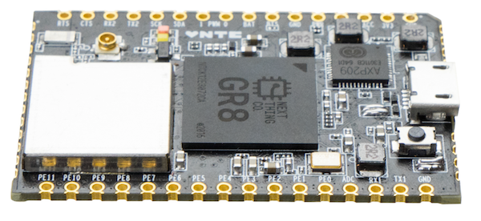
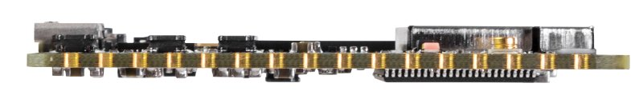
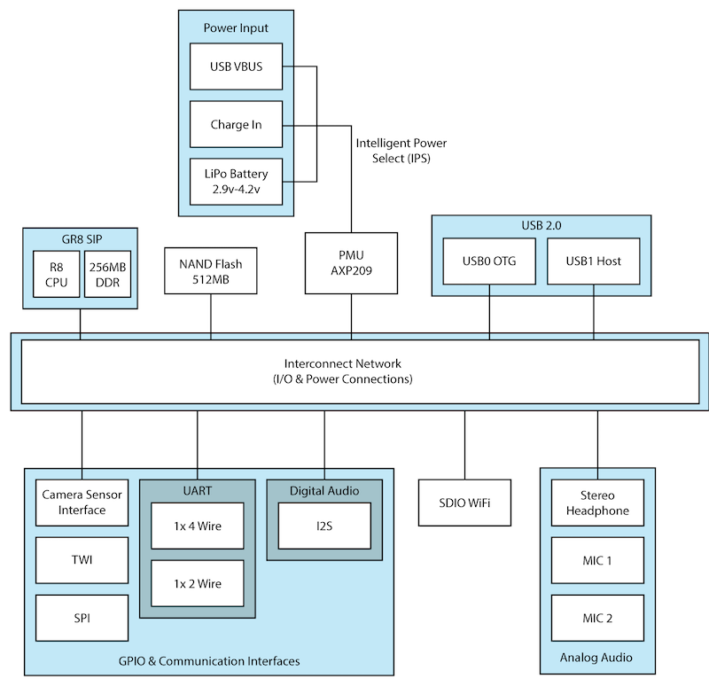
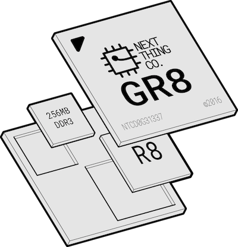
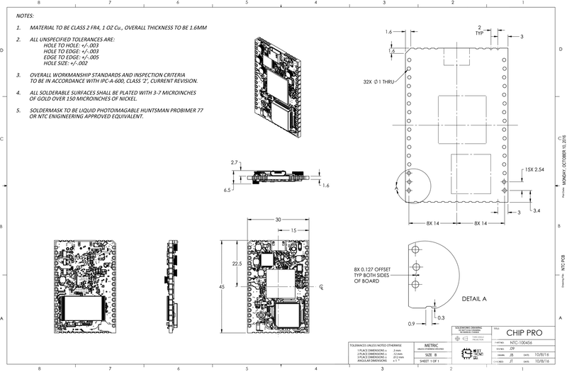
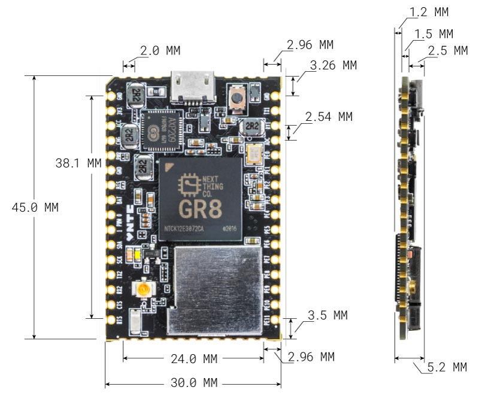
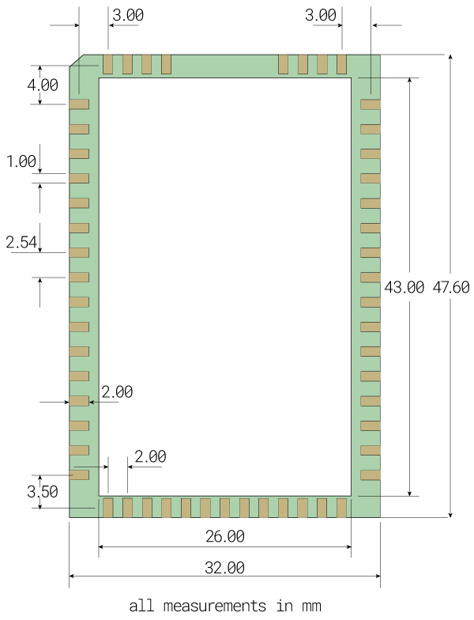
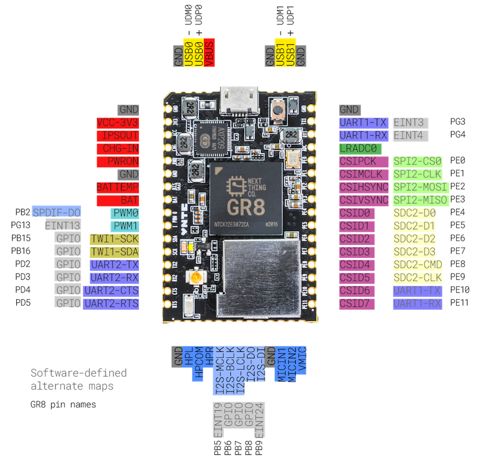
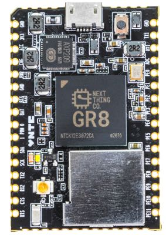

C.H.I.P. Pro Overview

The C.H.I.P. Pro System-on-a-Module is designed to get you making great products instead of re-inventing computers. It’s a low-cost, high-capability module that lets you focus on fast iterations of brilliant ideas that will be ready to manufacture.
This document provides technical details on the module and basic guides for getting started with working with C.H.I.P. Pro. To get the most out of developing and designing for C.H.I.P. Pro, we recommend the C.H.I.P. Pro Development Kit.
Overview
C.H.I.P. Pro is a breadboard-friendly and surface-mount-ready computer designed from the ground up to power the next generation of smart devices.
C.H.I.P. Pro is powered by GR8, a system-in-package (SiP) that was designed by us at Next Thing Co. GR8 features a 1GHz Allwinner R8 ARM Cortex-A8 processor, Mali400 GPU, and 256MB of Nanya DDR3 DRAM. in a 14mm x 14mm FBGA package. C.H.I.P. Pro adds to the GR8 with 512MB of high-speed NAND storage, WiFi and Bluetooth connectivity, power and battery management, pins for popular I/O busses, USB gadget, the verstatility of mainline Linux, all on a compact footprint.
The module offers all the popular interfaces you’d expect. With two UARTs, a Two Wire Interface, a parallel camera interface, SPI, two PWM channels, a USB 2.0 OTG, and a USB 2.0 Host, C.H.I.P. Pro is packed full of opportunity. Comprehensive audio handling includes a built-in 24-bit ADC/DAC for stereo audio in and out, One Wire Audio digital out, and I2S digital audio for interfacing with professional audio DACs.
C.H.I.P Pro is CE, IC, and FCC part 15 modularly certified, making integration into end products easy. The on-board Realtek 8723DS combination module provides compliant Wi-Fi B/G/N and Bluetooth 4.2 Low-Energy connectivity. A software controlled antenna path selects between the on-board chip antenna or a uFL antenna connector where several pre-certified antennas can be added to boost wireless transmit and receive range.
Charge or power from an AC/DC adapter or power it from USB or a rechargable battery. On-board Power management with the AXP209 provides plenty of power options to better match your applications: mobile, industrial, and low-power are all possible with C.H.I.P. Pro.

C.H.I.P. Pro is rated to operate between 2.9V-6V in temperatures ranging between 0 and 70 degrees Celsius and measures 45mm x 30mm.
We can’t wait to see how you’ll integrate C.H.I.P Pro into your next product.
Block Diagram

GR8 SiP

C.H.I.P. Pro is built around the GR8 System-in-Package that combines an Allwinner R8 with DDR3 memory on the same piece of silicon. Basic specifications are as follows:
- 1GHz Next Thing Co. GR8 ARM Cortex-A8 with ARMv7 instruction set and NEON coprocessor
- Mali-400 GPU supporting OpenGL ES1.1/ 2.0 and OpenVG 1.1
- 256MB DDR3 RAM
More information about the GR8 SiP can be found in the GR8 data sheet
Specifications
C.H.I.P. Pro Exposed Interfaces
- 1x Two Wire Interface
- 2x UART (1x 2-wire and 1x 4-wire)
- SPI enabling SD card interface
- SPI Bus
- 2x PWM
- 6-bit ADC
- I2S Digital Audio
- S/PDIF IEC-60958 Digital Audio Input and Output
- 2x USB HS/FS/LS
- USB 2.0 Host
- USB 2.0 OTG
- Parallel Camera Interface
- 3.3V DC supply
- 27 GPIO
Audio
- Stereo analog input 44.1K or 48K sampling rate
- Stereo analog output 44.1K or 48K sampling rate
- Programmable phantom power for mic in
- Bi-directional I2S bus for external DAC codecs
Power and Battery Management
- AXP209 power management unit, connected to a dedicated I2C bus
- 2.9V to 6V
- 0 to 70 degrees Celsius
Wireless Connectivity
- Realtek 8723DS Combination Module
- Bluetooth 4.2 LE
- WiFi 802.11 b/g/n
- uFL antenna connector
- FCC/CE/IC certified
Operating System
- GadgetOS, a Linux optimized for GR8 and C.H.I.P. Pro
- Debian for C.H.I.P. Pro, for a familiar Linux experience
- Next Thing Co. rootfs on GitHub so developers can create their own Linux distro for C.H.I.P. Pro
Mechanical Drawing
You can download a high resolution version of this image here 
{kind=link}
Dimensions
Refer to the following diagram for the complete dimensions of C.H.I.P. Pro:

PCB Footprint
C.H.I.P. Pro is designed for scale so it’s ready to drop into any SMT manufacturing line. The exterior dimensions for the PCB pads for C.H.I.P. Pro are 32 mm x 47.60 mm (1.26 in x 1.87 in). More detailed dimensions for your board layout are in the following diagram:

Data Sheet
While this documentation contains much of the needed technical info for C.H.I.P. Pro, the complete data sheet for C.H.I.P. Pro is available on our C.H.I.P. Pro Hardware github repo
Get Working With C.H.I.P. Pro
Power In, Power Out
C.H.I.P. Pro can be powered in a few ways, all managed by the AXP209 power management circuit. For simple applications on the test desk, power can be provided over the micro USB connector from a USB power supply or powered USB hub. But C.H.I.P. is for building, and depending on the nature of your product, there are different power options to make it easier to make with C.H.I.P. Pro.
- CHG-IN - connect 4.8 to 6 volts of power to this pin (and GND) to provide power for C.H.I.P. Pro. If you have a Lithium Polymer (LiPo) battery connected to BAT, then power provided to CHG-IN will also charge the battery.
- BAT - connect a 3.7 volts Lithium Polymer (LiPo) battery to this pin (and GND) to provide power to C.H.I.P. Pro and receive charge from power inputs.
- VBUS - connect 5 volts to this pin (and GND to pin 53) to provide power to C.H.I.P.. Power connected to VBUS will also charge a battery, just at a slower rate than from CHG-IN
C.H.I.P. Pro has three options for providing power to peripherals and sensors.
- VCC-3V3 - provides 3.3V for sensors.
- IPSOUT - the Intelligent Power Select provides up to 2.5 amps at up to 5 volts, depending on power provided at CHG-IN or VBUS. If a 3.7V LiPo battery is the only source of power, IPSOUT will provide a bit less than 3.7 volts. In general, the voltage at IPSOUT is a bit less than voltage in, with a max voltage of 5 volts.
- PWRON - connect to ground to turn C.H.I.P. Pro on and boot the operating system.
If you need to provide power to a USB device connected to USB1, connect IPSOUT to an appropriate switching regulator to the USB connector pad on your circuit board.
Powering Off
Ideally C.H.I.P. Pro should be powered off through a terminal window using the poweroff command. Alternatively, connect PWR pin to GND for 7-10 seconds to power off or disconnect power supply.
Get an Operating System
Like its larger brother C.H.I.P., C.H.I.P. Pro’s GR8 SiP can run mainline Linux. This provides security, flexibility, robust tools, and open-source options for getting your product working. In the interest of power consumption and storage space, we have several options to best fit your production.
Gadget OS
There are several examples of the Gadget OS for the Developer’s Kit. These examples are designed around the hardware on the Developer’s Kit board. If you are building a circuit that incorporates mics and LEDs you can start with these examples and a bare C.H.I.P. Pro. Read more in the developer’s kit documentation
Debian
We provide a standard Debian distribution, complete with all the package managers and conveniences you know and love. This package is ideal for development, since it is more flexible than the buildroot-based Gadget OS. However, you will want to keep track of your dependencies to more easily transition to the more nimble Gadget OS.
Things you will need
- C.H.I.P. Pro
- Standard-USB to micro-USB connector
- An appendage to hold down the FEL button
- Separate computer with Chrome or Chromium browser
Flash
Visit our OS flash site at flash.getchip.com in Chrome or Chromium browser. Hold down the FEL button on C.H.I.P. Pro and follow all the instructions in the browser. If you haven’t already, you’ll be asked to install the C.H.I.P. Flasher Plug-in for Chrome.
Use It
Now that you have power and an operating system, you can connect to your C.H.I.P. Pro to test software and hardware, customize it, or load new software. There are two very important connections for this: serial and network.
Serial Connection
The most basic connection to C.H.I.P. Pro is a serial connection controlled through a host computer’s terminal program.
UART
Things you will need
- USB-UART cable (for example)
- Drivers
- Soldering gun
- Solder
- Pin headers
- Computer with monitor (for example, a C.H.I.P.!)
- Terminal program for Windows such as Cygwin or PuTTY (OS X and Linux have terminals built-in)
A UART to USB serial connection between C.H.I.P. Pro and your computer offers the most comprehensive look at what’s happening in C.H.I.P. Pro as it boots, since you can get all message output from the moment it starts booting. You’ll need a USB to UART cable and the appropriate drivers for your computer’s OS.
For example, this cable uses the Prolific hardware, with drivers available on their site. Another popular chipset for these cables is FTDI.
Connect the cable to your computer and the UART pins on C.H.I.P. Pro. You’ll need to solder some headers onto C.H.I.P. Pro for a reliable connection to the loose wires on the cable. The black cable goes to ground, green is usually RX, and white is usually TX, but there’s no guarantee. So, make sure to check the manufacturer’s product description for the correct pinouts.
From your computer’s terminal use the command:
screen /dev/tty.usbserial 115200 #OS X
screen /dev/ttyUSB0 115200 #Linux
Another popular program besides screen is cu.
For Windows read our guide on connecting with PuTTY or Cygwin.
USB Gadget Serial
Things you will need
- USB A to micro-USB cable (for example)
- Computer with monitor (for example, a C.H.I.P.!)
- Terminal program for Windows such as Cygwin or PuTTY (OS X and Linux have terminals built-in)
If your OS is configured for Gadget serial, this is usually the easiest way to get inside C.H.I.P. Pro’s software. While you won’t be able to get boot messages, since the serial emulation won’t be ready, all you need is a USB A to micro-USB cable to connect C.H.I.P. Pro to your computer. From your computer’s terminal:
screen /dev/tty.usbmodem1440 115200 #OS X
screen /dev/ttyACM0 115200 #Linux
Note that for OS X you either need to list out all the tty devices with ls /dev/tty.usbm* to find the actual ID or use the tab key to autocomplete, like screen /dev/tty.usbm <tab>.
For Windows read our guide on connecting with PuTTY or Cygwin.
Log In
Once you have connected via serial you’ll be prompted for a username and password. The defaults are chip and chip. Change your password with passwd.
Network
Once you have connected to C.H.I.P. Pro with a serial connection, you can set it up for network access. How this happens depends on the OS you have loaded onto C.H.I.P. Pro. Most likely you’ll be able to make basic connections to a WiFi network using either connman or nmcli in the command line.
Connman
The basic commands to connect are done in a connman terminal. You can learn more about connman here
sudo connmanctl # enter the connman terminal
>enable wifi # turn on wifi
>scan wifi # find networks
>agent on # let connman prompt for a password when needed
>services # list all the visible networks so you can get the wifi_ id string
>connect wifi_7cc70905cd77_4e5443_managed_psk #connect to wifi_ id, connman will then prompt for password
>quit # get back to linux terminal
If your network does not have a password (ends with managed_none), you can connect using the wifi_ id that does not have the word “hidden” in it.
Confirm your connection with ping -c 4 8.8.8.8 and get your IP address from the wlan0 line from ip a.
ssh on buildroot
Once you have your C.H.I.P. Pro on the network, chances are that you’ll want to use ssh to connect to it. You can ssh chip@<ip address>. However, you’ll probably want to switch to root once you are in. You can do that with the command su and use root as the password.
nmcli
You may find nmcli is the gateway to your network if you are using a Debian linux image on C.H.I.P. Pro. There’s a lot of information about nmcli on the archlinux site. If nmcli is what you need, here are the commands you can use to connect to a network using your serial connection in the terminal:
sudo nmcli d wifi # list visible wifi networks
sudo nmcli d wifi connect "Network SSID Name" password "Your Password" ifname wlan0 # if network is hidden add this to end: hidden yes
ssh on debian
If you want to connect to C.H.I.P. Pro with ssh you will probably find it convenient to setup a unique name for your C.H.I.P. Pro. This gist has a simple script to make this easy.
ping!
It’s always reassuring to check that you have a connection with ping:
ping 8.8.8.8 #google dns server
Access I/O via sysfs
GPIO Input
These lines of code will let us read values on pin CSIDO, which corresponds to pin 132 in the linux sysfs (CSID0-CSID7 have numbers 132-139) First, we tell the system we want to listen to this pin:
sudo sh -c 'echo 132 > /sys/class/gpio/export'
View the mode of the pin. This should return “in”:
cat /sys/class/gpio/gpio132/direction
Connect a jumper wire or switch between Pin CSID0 and GND. Now use this line of code to read the value:
cat /sys/class/gpio/gpio132/value
GPIO Output
You could also change the mode of a pin from “in” to “out”
sudo sh -c 'echo out > /sys/class/gpio/gpio132/direction'
Now that it’s in output mode, you can write a value to the pin:
sudo sh -c 'echo 1 > /sys/class/gpio/gpio132/value'
If you attach an LED to the pin and ground, the LED will illuminate according to your control messages.
GPIO Done
When you are done experimenting tell the system to stop listening to the gpio pin:
sudo sh -c 'echo 132 > /sys/class/gpio/unexport'
Finding GPIO Pin Names
You can calculate the sysfs pin number using the Allwinner R8 Datasheet, starting on page 18.
The letter index is a multiple of 32 (where A=0), and the number is an offset. For example PE4 is CSID_D0 so
E=4
(32*4)+4 = 132
Therefore, listening to CSID0 in sysfs would begin with
sudo sh -c 'echo 132 > /sys/class/gpio/export'
Open Source
The C.H.I.P. Pro is open source hardware. Get all the details in our github repo.
Pin Descriptions

The C.H.I.P. Pro has a number of specialized pins for input and output, plus 27 general purpose input and output (GPIO) pins. The image above shows the pin location and muxing on C.H.I.P. Pro, and tables below organize pins according to their specialized functions.
- Pin Number
- Port
- GR8 Pin Name
- Signal Description
- Type
For more detailed information about pins on C.H.I.P. Pro and the GR8, please see the data sheets available here.
BATTEMP
| Pin Number | Port | GR8 Pin Name | Signal Description | Type |
|---|---|---|---|---|
| 7 | NA | BATTEMP | Thermistor connection for battery heat detection | I |
PWM
| Pin Number | Port | GR8 Pin Name | Signal Description | Type |
|---|---|---|---|---|
| 9 | PB2 | PWM0 | Pulse Width Module Channel0 Output | O |
| 10 | PG13 | PWM1 | Pulse Width Module Channel1 Output | O |
TWI1
| Pin Number | Port | GR8 Pin Name | Signal Description | Type |
|---|---|---|---|---|
| 11 | PB16 | TWI1-SCK | TWI0 Clock | I/O |
| 12 | PB15 | TWI1-SDA | TWI0 Data/Address | I/O |
UART – Universal Asynchronous Receiver/Transmitter
| Pin Number | Port | GR8 Pin Name | Signal Description | Type |
|---|---|---|---|---|
| 44 | PG3 | UART1-TX | UART1 Data Transmit | O |
| 43 | PG4 | UART1-RX | UART1 Data Receive | I |
| 13 | PD2 | UART2-TX | UART2 Data Transmit | I |
| 14 | PD3 | UART2-RX | UART2 Data Receive | O |
| 15 | PD4 | UART2-CTS | UART2 Data Clear to Send | I |
| 16 | PD5 | UART2-RTS | UART2 Data Request to Send | I |
Audio Codec
| Pin Number | Port | GR8 Pin Name | Signal Description | Type |
|---|---|---|---|---|
| 26 | NA | AGND | Audio Codec Analog Ground | G |
| 19 | NA | HPCOM | Headphone Common Reference Output | AO |
| 18 | NA | HPL | Headphone Left Channel Output | AO |
| 20 | NA | HPR | Headphone Right Channel Output | AO |
| 27 | NA | MICIN1 | Microphone Input | AI |
| 28 | NA | MICIN2 | Microphone Input | AI |
| 29 | NA | VMIC | Bias Voltage Out | AO |
I2S
| Pin Number | Port | GR8 Pin Name | Signal Description | Type |
|---|---|---|---|---|
| 21 | PB5 | I2S-MCLK | I2S Master Clock | O |
| 22 | PB6 | I2S-BCLK | I2S Bit Clock | I/O |
| 23 | PB7 | I2S-LRCK | I2S Left/Right Channel Select Clock | I/O |
| 24 | PB8 | I2S-DO | I2S Data Output | O |
| 25 | PB9 | I2S-DI | I2S Data Input | I |
OWA – One Wire Audio
| Pin Number | Port | GR8 Pin Name | Signal Description | Type |
|---|---|---|---|---|
| 9 | PB2 | OWA-DO | OWA Data Output | O |
LRADC
| Pin Number | Port | GR8 Pin Name | Signal Description | Type |
|---|---|---|---|---|
| 42 | NA | LRADC0 | ADC Input Channel0 for Multi-Button Input | I |
SPI – Serial Peripheral Interface
| Pin Number | Port | GR8 Pin Name | Signal Description | Type |
|---|---|---|---|---|
| 41 | PE0 | SPI2-CS0 | SPI2 Chip Slect Signal (active low) | I/O |
| 40 | PE1 | SPI2-CLK | SPI2 Clock Signal | I/O |
| 39 | PE2 | SPI2-MISO | SPI2 Master Data In, Slave Data Out | I/O |
| 38 | PE3 | SPI2-MOSI | SPI2 Master Data Out, Slave Data In | I/O |
D0-D7 – General Purpose In/Out
| Pin Number | Port Name | GR8 Pin Name | Signal Description | Type |
|---|---|---|---|---|
| 37-30 | D0-D7 | GPIO | Digital I/O | I/O |
CSI – Camera Sensor Interface
| Pin Number | Port Name | GR8 Pin Name | Signal Description | Type |
|---|---|---|---|---|
| 41 | PE0 | CSI-PCLK | CSI Pixel Clock | I |
| 40 | PE1 | CSI-MCLK | CSI Master Clock | O |
| 39 | PE2 | CSI-HSYNC | CSI Horizontal Sync | I |
| 38 | PE3 | CSI-VSYNC | CSI Vertical Sync | I |
| 37-30 | PE4-PE11 | CSI-Data[7:0] | CSI Data Bit | I |
SD/MMC
| Pin Number | Port Name | GR8 Pin Name | Signal Description | Type |
|---|---|---|---|---|
| 37-34 | PE4-PE7 | SDC2-D[3:0] | SDC2 Data Bit [3:0] | I/O |
| 33 | PE8 | SDC2-CMD | SDC2 Command Signal | I/O |
| 32 | PE9 | SDC2-CLK | SDC2 Clock | O |
External Interrupt
| Pin Number | Port Name | GR8 Pin Name | Signal Description | Type |
|---|---|---|---|---|
| 44 | PG3 | EINT3 | External Interupt Input | I |
| 42 | PG4 | EINT4 | External Interupt Input | I |
| 10 | PG13 | EINT13 | External Interupt Input | I |
| 21 | PB5 | EINT19 | External Interupt Input | I |
| 25 | PB9 | EINT24 | External Interupt Input | I |
USB1 and USB0
| Pin Number | Port Name | GR8 Pin Name | Signal Description | Type |
|---|---|---|---|---|
| 52 | UDM0 | USB0-DM | USB0 D- Signal | A I/O |
| 51 | UDP0 | USB0-DP | USB0 D+ Signal | A I/O |
| 48 | UDM1 | USB1-DM | USB1 D- Signal | A I/O |
| 47 | UDP1 | USB1-DP | USB1 D+ Signal | A I/O |
| 50 | VUSB | VCC-USB | VBUS Power Supply | P |
Note: The on-board micro-USB connector is wired in series with the castellated edge points at VBUS, UDP0, UDM0, and GND. If you connect a USB host to both the castellated edges AND the connector, at best your USB will no longer work, at worst you may damage your equipment.
C.H.I.P. Pro FAQ

What are the C.H.I.P. Pro specifications?
- 1GHz Source Parts GR8 processor - ARM Cortex-A8 with ARMv7 instruction set and NEON instruction set
- Mali-400 supporting OpenGL ES1.1 /2.0 and OpenVG 1.1
- 512MB NAND flash storage
- 256MB DDR3 RAM
- WiFi B/G/N
- Bluetooth 4.2 LE
- I2S
- 1x Two Wire Interface
- 2x UART (1x 2-wire and 1x 4-wire)
- 2x SPI controllers
- 27 GPIO
How much does C.H.I.P. Pro cost?
C.H.I.P. Pro costs $16.
Are there quantity discounts?
Please contact us: sales@source.parts.
Is the C.H.I.P. Pro open source?
Yes, you can see our design files in our git repository.
Does C.H.I.P. Pro replace C.H.I.P.?
C.H.I.P. is still a huge part of what we do. We made C.H.I.P. Pro and Gadget so the enterprising members of the CHIPster community would have a great option for scalable hardware, software and infrastructure for their products.
Where can I buy the C.H.I.P. Pro?
Currently, we’re offering the C.H.I.P. Pro Dev kit for $49 in our web store with an estimated shipping by the end of this year. C.H.I.P. Pro will be available in Q1 of 2017.
How many may I order?
As many or as few as you’d like. 1 to 1 million (or more). For larger orders, hit us up at sales@source.parts
When will C.H.I.P. Pro ship?
C.H.I.P. Pro Dev kits are shipping in late Q4 of 2016 and C.H.I.P. Pro will be available in any quantity starting Q1 of 2017.
What is the lead time on a C.H.I.P. Pro order?
Once available in Q1 of 2017, small orders (1-20) will ship immediately. For large orders taking advantage of our factory flashing offering, there will be a lead time of 60 days.
I made a C.H.I.P. prototype, will it be hardware and software compatible with GR8?
Yes! GR8 has the same Allwinner R8 processor that is in C.H.I.P., so your C.H.I.P. software is 100% compatible with C.H.I.P. Pro. We believe you shouldn’t have to change your software to go into production.
C.H.I.P v C.H.I.P Pro
C.H.I.P and C.H.I.P Pro have a lot of similarities, but there are some very important distinctions that go beyond the obvious size differences.
| feature | C.H.I.P | C.H.I.P Pro |
|---|---|---|
| RAM | 512 MB | 256 MB |
| Storage | 4GB NAND SLC or 8GB NAND MLC | 512 MB SLC NAND |
| SD Card Interface | Yes, 4-bit | Yes, 4-bit |
| I2S Digital Audio | No | Yes |
| Video Interface | Composite | No |
| Certification | Section 15 | Section 15 Modular |
| Easy to Mass Produce with | No | Yes |
| Easy to Play With | Yes | No |
| Size | Big (40.64 mm x 60.50 mm) | Small (30 mm x 45 mm) |
| Pin Headers | Yes | No |
| Operating System | Debian | Gadget |
| SOC | Allwinner R8 ARM7 | Next Thing GR8 ARM7 |
| Speed | 1 Ghz | 1 Ghz |
| Wifi | B/G/N 2.4GHz (Realtek RTL8723BS) | B/G/N 2.4GHz (Realtex RTL8723DS) |
| Bluetooth | 4.0 | 4.2 |
| PWM | 1 | 2 |
| Audio Input | 1 channel | 2 channel |
If you are looking for a more C.H.I.P-like experience with connectors and LEDS, we recommend the Development Kit.
GR8 Pins in C.H.I.P. Pro
| Function | Pin Name | On C.H.I.P. Pro | Future Use | Multi2 | Multi3 | Multi4 | Multi5 | Multi6 | Multi7 | |
|---|---|---|---|---|---|---|---|---|---|---|
| PB(21) | PB0 | TWI0 | TWI0_SCK | |||||||
| PB1 | TWI0 | TWI0_SDA | ||||||||
| PB2 | PWM0 | PWM0 | SPDIF_DO | EINT16 | ||||||
| PB3 | IR | IR_TX | EINT17 | |||||||
| PB4 | IR | IR_RX | EINT18 | |||||||
| PB5 | I2S | I2S_MCLK | EINT19 | |||||||
| PB6 | I2S | I2S_BCLK | EINT20 | |||||||
| PB7 | I2S | I2S_LRCK | EINT21 | |||||||
| PB8 | I2S | I2S_DO | EINT22 | |||||||
| PB9 | I2S | I2S_DI | SPDIF_DI | EINT23 | ||||||
| PB10 | SPDIF | SPI2_CS1 | SPDIF_DO | EINT24 | ||||||
| PB11 | JTAG0 | SPI2_CS0 | JTAG_MS0 | EINT25 | ||||||
| PB12 | JTAG0 | SPI2_CLK | JTAG_CK0 | EINT26 | ||||||
| PB13 | JTAG0 | SPI2_MOSI | JTAG_DO0 | EINT27 | ||||||
| PB14 | JTAG0 | SPI2_MISO | JTAG_DI0 | EINT28 | ||||||
| PB15 | TWI1 | TWI1_SCK | ||||||||
| PB16 | TWI1 | TWI1_SDA | ||||||||
| PB17 | TWI2 | TWI2_SCK | ||||||||
| PB18 | TWI2 | TWI2_SDA | ||||||||
| PC(20) | PC0 | NAND | NWE | SPI0_MOSI | ||||||
| PC1 | NAND | NALE | SPI0_MISO | |||||||
| PC2 | NAND | NCLE | SPI0_CLK | |||||||
| PC3 | NAND | NCE1 | SPI0_CS0 | |||||||
| PC4 | NAND | NCE0 | ||||||||
| PC5 | NAND | NRE | ||||||||
| PC6 | NAND | NRB0 | SDC2_CMD | |||||||
| PC7 | NAND | NRB1 | SDC2_CLK | |||||||
| PC8 | NAND | NDQ0 | SDC2_D0 | |||||||
| PC9 | NAND | NDQ1 | SDC2_D1 | |||||||
| PC10 | NAND | NDQ2 | SDC2_D2 | |||||||
| PC11 | NAND | NDQ3 | SDC2_D3 | |||||||
| PC12 | NAND | NDQ4 | SDC2_D4 | |||||||
| PC13 | NAND | NDQ5 | SDC2_D5 | |||||||
| PC14 | NAND | NDQ6 | SDC2_D6 | |||||||
| PC15 | NAND | NDQ7 | SDC2_D7 | |||||||
| PC19 | NAND | NDQS | UART2_RX | UART3_RTS | ||||||
| PD2 | UART2 | LCD | LCD_D2 | UART2_TX | ||||||
| PD3 | UART2 | LCD | LCD_D3 | UART2_RX | ||||||
| PD4 | UART2 | LCD | LCD_D4 | UART2_CTS | ||||||
| PD5 | UART2 | LCD | LCD_D5 | UART2_RTS | ||||||
| PD6 | LCD | LCD_D6 | ECRS | |||||||
| PD7 | LCD | LCD_D7 | ECOL | |||||||
| PD10 | LCD | LCD_D10 | ERXD0 | |||||||
| PD11 | LCD | LCD_D11 | ERXD1 | |||||||
| PD12 | LCD | LCD_D12 | ERXD2 | |||||||
| PD13 | LCD | LCD_D13 | ERXD3 | |||||||
| PD14 | LCD | LCD_D14 | ERXCK | |||||||
| PD15 | LCD | LCD_D15 | ERXERR | |||||||
| PD18 | LCD | LCD_D18 | ERXDV | |||||||
| PD19 | LCD | LCD_D19 | ETXD0 | |||||||
| PD20 | LCD | LCD_D20 | ETXD1 | |||||||
| PD21 | LCD | LCD_D21 | ETXD2 | |||||||
| PD22 | LCD | LCD_D22 | ETXD3 | |||||||
| PD23 | LCD | LCD_D23 | ETXEN | |||||||
| PD24 | LCD | LCD_CLK | ETXCK | |||||||
| PD25 | LCD | LCD_DE | ETXERR | |||||||
| PD26 | LCD | LCD_HSYNC | EMDC | |||||||
| PD27 | LCD | LCD_VSYNC | EMDIO | |||||||
| PE(12) | PE0 | SPI2 | CSI | TS_CLK | CSI_PCLK | SPI2_CS0 | EINT14 | |||
| PE1 | SPI2 | CSI | TS_ERR | CSI_MCLK | SPI2_CLK | EINT15 | ||||
| PE2 | SPI2 | CSI | TS_SYNC | CSI_HSYNC | SPI2_MOSI | |||||
| PE3 | SPI2 | CSI | TS_DVLD | CSI_VSYNC | SPI2_MISO | |||||
| PE4 | SDC2 | CSI | TS_D0 | CSI_D0 | SDC2_D0 | |||||
| PE5 | SDC2 | CSI | TS_D1 | CSI_D1 | SDC2_D1 | |||||
| PE6 | SDC2 | CSI | TS_D2 | CSI_D2 | SDC2_D2 | |||||
| PE7 | SDC2 | CSI | TS_D3 | CSI_D3 | SDC2_D3 | |||||
| PE8 | SDC2 | CSI | TS_D4 | CSI_D4 | SDC2_CMD | |||||
| PE9 | SDC2 | CSI | TS_D5 | CSI_D5 | SDC2_CLK | |||||
| PE10 | UART1 | CSI | TS_D6 | CSI_D6 | UART1_TX | |||||
| PE11 | UART1 | CSI | TS_D7 | CSI_D7 | UART1_RX | |||||
| PF(6) | PF0 | SDC0 | SDC0_D1 | JTAG_MS1 | ||||||
| PF1 | SDC0 | SDC0_D0 | JTAG_DI1 | |||||||
| PF2 | SDC0 | SDC0_CLK | UART0_TX | |||||||
| PF3 | SDC0 | SDC0_CMD | JTAG_DO1 | |||||||
| PF4 | SDC0 | SDC0_D3 | UART0_RX | |||||||
| PF5 | SDC0 | SDC0_D2 | JTAG_CK1 | |||||||
| PG(14) | PG0 | GPS | GPS_CLK | EINT0 | ||||||
| PG1 | GPS | GPS_SIGN | EINT1 | |||||||
| PG2 | GPS | GPS_MAG | EINT2 | USB0-IDDET | ||||||
| PG3 | UART1 | SDC1_CMD | MS_BS | UART1_TX | EINT3 | |||||
| PG4 | UART1 | SDC1_CLK | MS_CLK | UART1_RX | EINT4 | |||||
| PG5 | UART1 | SDC1_D0 | MS_D0 | UART1_CTS | EINT5 | |||||
| PG6 | UART1 | SDC1_D1 | MS_D1 | UART1_RTS | UART2_RTS | EINT6 | ||||
| PG7 | UART2 | SDC1_D2 | MS_D2 | UART2_TX | EINT7 | |||||
| PG8 | UART2 | SDC1_D3 | MS_D3 | UART2_RX | EINT8 | |||||
| PG9 | SPI1 | SPI1_CS0 | UART3_TX | EINT9 | ||||||
| PG10 | SPI1 | SPI1_CLK | UART3_RX | EINT10 | ||||||
| PG11 | SPI1 | SPI1_MOSI | UART3_CTS | EINT11 | ||||||
| PG12 | SPI1 | SPI1_MISO | UART3_RTS | EINT12 | ||||||
| PG13 | PWM1 | SPI1 | SPI1_CS1 | PWM1 | UART2_CTS | EINT13 | ||||
| TVOUT | TVOUT | TVOUT | ||||||||
| USB | UDM0 | USB0 | ||||||||
| UDP0 | USB0 | |||||||||
| UDM1 | USB1 | |||||||||
| UDP1 | USB1 | |||||||||
| VCC_USB | ||||||||||
| TP | TPX1 | TP | ||||||||
| TPX2 | TP | |||||||||
| TPY1 | TP | |||||||||
| TPY2 | TP | |||||||||
| LINEINL | LINEIN | |||||||||
| LINEINR | LINEIN | |||||||||
| MIC1OUTP | ||||||||||
| MIC1OUTN | ||||||||||
| VMIC | ||||||||||
| MICIN2 | MICIN2 | |||||||||
| MICIN1 | MICIN1 | |||||||||
| VRA1 | ||||||||||
| VRA2 | ||||||||||
| AVCC | ||||||||||
| VRP | ||||||||||
| AGND | ||||||||||
| HPR | AUDIO-OUT | |||||||||
| HPCOM | AUDIO-OUT | |||||||||
| HPCOMFB | ||||||||||
| VCC_HP | ||||||||||
| HPBP | ||||||||||
| HPL | AUDIO-OUT | |||||||||
| LRADC | LRADC0 | LRADC0 | ||||||||
| LRADC1 |